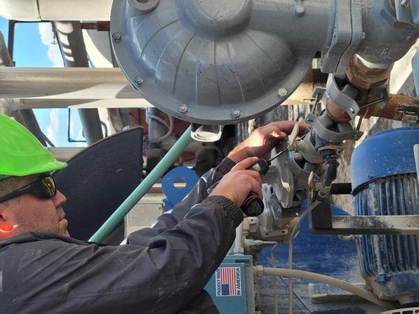
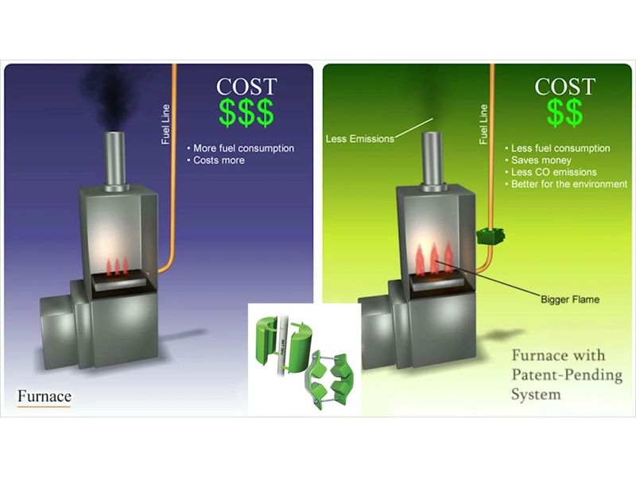
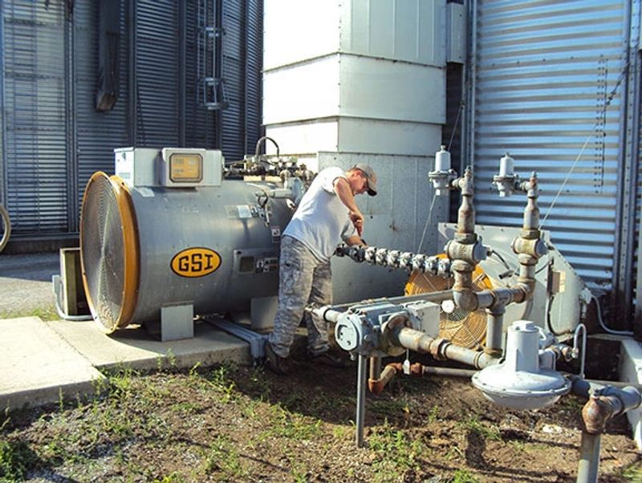
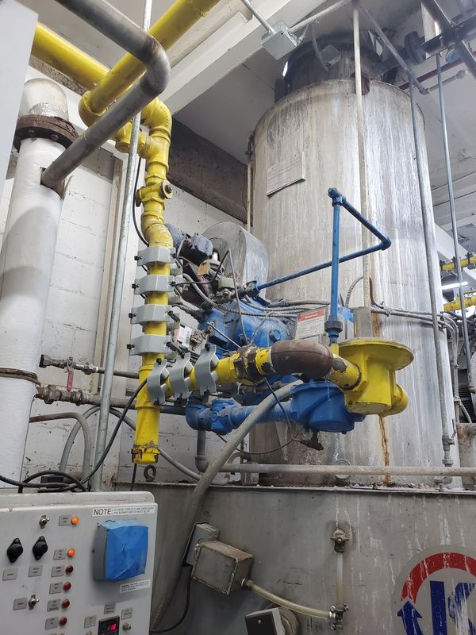

Fuel Savers Introduction
Introduction of the Flo-Gistics Fuel Saver
The combustion engine efficiency is about 9% and with the Flo-Gistics Fuel Saver you will improve the combustion of fluid fuel in combustion devices, such as general burners, incinerators, fuel oil boilers from appliance boilers to heat power boilers (home or industrial heating), combustion furnaces, and internal combustion engines in automobiles (two-cycle and four-cycle, diesel and gasoline), trucks, ships and jets, where the fuel employed is liquid or gaseous hydro fuels, such as gas, natural gas, propane, kerosene, gasoline, fuel oil, butane, etc...
Flo-Gistics Magnetic Fuel Saver
Applying a magnetic field to ionizing fuel to be fed to combustion devices we can ensure a more complete combustion, obtaining a maximization of the fuel economy, improving the fuel efficiency and reducing polluting emissions.

How Flo-Gistics Works
Most fuels for internal combustion engines are liquid. But liquid fuels don't combust till they are vaporized and mixed with air.
Currently regulated gas emissions from motor vehicles are unburned hydrocarbon (HC), carbon monoxide (CO), and oxides of nitrogen (NOx). Unburned HC and NOx react in the atmosphere to form photo-chemical smog. Smog is highly oxidizing in the environment and is the prime cause of eye and throat irritation, bad odor, plant damage, and decreased visibility. Oxides of Nitrogen are also toxic. CO impairs blood's capability to carry oxygen to the brain, resulting in slower reaction times and impaired judgment.
Fuel mainly consists of hydrocarbons. Groupings of hydrocarbons, when flowing through a magnetic field, change their orientations of magnetization in a direction opposite to that of the magnetic field. The molecules of hydrocarbon change their configuration. At the same time intermolecular force is considerably reduced or depressed. These mechanisms are believed to help disperse oil particles and to become finely divided. In addition, hydrogen ions in fuel and oxygen ions in air or steam are magnetized to form magnetic domains which are believed to assist in atomizing fuel into finer particles.
Generally a liquid or gas fuel used for an internal combustion engine is composed of a set of molecules. Each molecule includes a number of atoms, which is composed of a nucleus and electrons orbiting around their nucleus. The molecules have magnetic moments in themselves, and the rotating electrons cause magnetic phenomena. Thus, positive (+) and negative (-) electric charges exist in the fuel's molecules. For this reason, the fuel particles of the negative and positive electric charges are not split into more minute particles. Accordingly, the fuels are not actively interlocked with oxygen during combustion, thereby causing incomplete combustion. To improve the above, the fuels have been required to be decomposed and ionized. The ionization of the fuel particles is accomplished by the supply of magnetic force.
The resultant conditioned fuel/air mixture magnetized burns more completely, producing higher engine output, better fuel economy, more power and most importantly reduces the amount of hydrocarbons, carbon monoxide and oxides of nitrogen in the exhaust. Another benefit of these devices is that magnetically charged fuel molecules with opposite polarities dissolve carbon build-up in carburetor jets, fuel injectors, and combustion chambers, helping to clean up the engine and maintain the clean condition.

Installation
The Flo-Gistics Fuel Savers are the most cost effective for treating fuel.
The Flo-Gistics Fuel Saver is attached on the pipe between pumping means and the burner, carburetor or fuel injectors, because it is unnecessary for any other parts to be magnetized.
The Flo-Gistics Fuel Savers require no cutting of the fuel line and no hose.

Examples of Results
Dust in exhaust gas from a boiler was measured by both weight and concentrate methods. It was found that at the same weight of dust contained in exhaust gas, the exhaust gas generated after the magnetizing treatment according to these devices exhibited a higher value in concentration than that generated without magnetization. This means that dust particles after magnetization are finer than those usually found, which in turn means that oil particles are made finer by the magnetizing treatment of these devices.
In boilers the combustion conditions are improved by applying magnetism to fuel according to these devices:
- The flame becomes brighter and turns from red to white orange. A high temperature bright flame is observed.
- The flame is reduced in vertical length and extended laterally. The rate of combustion becomes higher.
- Spark in the flame is reduced or eliminated.
- Vibrating combustion is prevented.
- Pollution material content in exhaust gas is reduced.
How the Flo-Gistic Eco-Clamp System Reduces Fuel Costs and Emissions
Methane (CH4) is the simplest organic compound found in fossil fuels. Hydrogen comes in two forms, Para and Ortho, characterized by their electron orbital spins.
What makes Hydrogen so special is the fact that it possesses two distinctive forms; Para-Hydrogen and Ortho-Hydrogen. Para-Hydrogen occurs when the electron is spinning in the opposite direction as the nucleus. When the electron is spinning in the same direction as the nucleus it is called Ortho-Hydrogen. Research conducted by Simon Ruskin found that the conversion of Hydrogen from Para- to Ortho- was done by magnetic means. Ortho-Hydrogen is much more combustible than Para-Hydrogen. In fact, for safety reasons the liquid hydrogen used as a propellant for the space shuttle is stored in its less volatile Para-Hydrogen state. In the Ortho-Hydrogen state, Methane (CH4) is highly unstable, which allows Oxygen to associate more freely with the Hydrogen atoms. The FLO-GISTIC ECO-CLAMP SYSTEM targets the Para-Hydrogen and energizes it to form Ortho-Hydrogen as did Ruskin, thus creating a more efficient combustion.
The concept of electron spin is similar to our concept of spin in the everyday non-quantum world. In physics, there is a fundamental law that states momentum cannot simply appear and disappear, since angular momentum is always conserved in any physical process. When magnetic force is applied, the atomic moments of the molecules tend to align with the direction of the field. As the axis of the electrons becomes aligned with the external magnetic field the angular momentum no longer averages out to zero. Consequently, the reactivity of the atom and related molecules is enhanced.
By altering the spin properties of the electron, we can enhance the reactivity of the fuel and related combustion process. Due to the breakthrough in magnetic technology and the development of a new generation of permanent magnets with high enough flux density, it is now possible to build Magnetic Fuel Conditioners that substantially change the hydrocarbon molecule from its para state to the higher energized ortho state. This higher spin state shows a higher potential (reactivity) which attracts additional oxygen. Combustion engineering teaches that additional oxygenation increases combustion efficiency resulting in fuel economy (i.e. turbo chargers, chemical oxidizing agents put into gasoline, etc.). Magnetic Fuel Conditioners providing a sufficient magnetic energy product and residence time therefore increase the fuel's ability to further oxidize. The results are more complete combustion, cleaner exhaust and fuel economy.

Conclusions
With a Flo-Gistics Fuel Saver we can increase the internal energy of the fuel, causing specific changes at a molecular level and making combustion easier. The molecules fly apart easier, join with oxygen easier and ignite easier. 'Ionization' implies that the fuel acquires a 'charge' and molecules of like charge repel each other, making fuel dispersal more efficient.
- 80% – 90% reduction in Hydrocarbon emissions.
- 60% – 80% reduction in Carbon Monoxide emissions.
- 20% reduction in Nitrogen Oxides.
- 10% – 40% reduction in fuel consumption.
The resultant conditioned fuel/air mixture, magnetized in opposite polarities, burns more completely, producing higher engine output, better fuel economy, more power and most importantly reduces the amount of hydrocarbons, carbon monoxide and oxides of nitrogen in the exhaust. Another benefit of these devices is that magnetically charged fuel and air molecules with opposite polarities dissolve carbon build-up in carburetor jets, fuel injectors, and combustion chambers, helping to clean up the engine and maintain the clean condition.